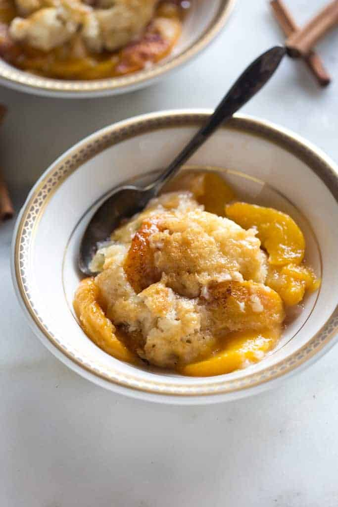

Peach Cobbler

Description
A deep-dish fruit dessert with a sweetened fruit filling that is topped off with a biscuit-like dough. The dough
may cover the entire dish or be dropped by the spoonful, earning it the name "cobbler" for its resemblance to a
cobblestone street. It gives you the same fruit-and-pastry combination as pie, but without all the effort.
Ingredients
- 8 fresh peaches - peeled, pitted and sliced into thin wedges
- ¼ cup white sugar
- ¼ cup brown sugar
- ¼ teaspoon ground cinnamon
- ⅛ teaspoon ground nutmeg
- 1 teaspoon fresh lemon juice
- 2 teaspoons cornstarch
- 1 cup all-purpose flour
- ¼ cup white sugar
- ¼ cup brown sugar
- 1 teaspoon baking powder
- ½ teaspoon salt
- 6 tablespoons unsalted butter, chilled and cut into small pieces
- ¼ cup boiling water
Mix together
- 3 tablespoons white sugar
- 1 teaspoon ground cinnamon
Steps
- Preheat oven to 425 degrees F (220 degrees C).
- In a large bowl, combine peaches, 1/4 cup white sugar, 1/4 cup brown sugar, 1/4 teaspoon cinnamon, nutmeg, lemon
juice, and cornstarch. Toss to coat evenly, and pour into a 2 quart baking dish. Bake in preheated oven for 10
minutes.
- Meanwhile, in a large bowl, combine flour, 1/4 cup white sugar, 1/4 cup brown sugar, baking powder, and salt.
Blend in butter with your fingertips, or a pastry blender, until mixture resembles coarse meal. Stir in water
until just combined.
- Remove peaches from oven, and drop spoonfuls of topping over them. Sprinkle entire cobbler with the sugar and
cinnamon mixture. Bake until topping is golden, about 30 minutes.